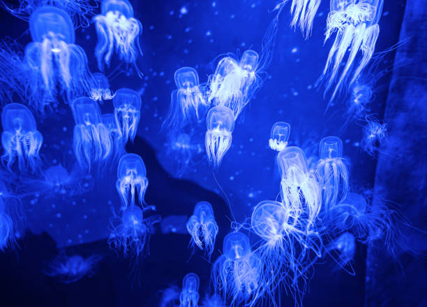

What Are Jellyfish?

Jellyfish, also known as jellies or sea jellies, are fascinating marine animals belonging to the phylum Cnidaria. Despite their name, they aren't actually fish! They are invertebrates, meaning they lack a backbone.
They are found in every ocean, from the surface to the deep sea. Some even live in fresh water. Jellyfish have existed for millions of years, possibly even before dinosaurs!
Jellyfish Anatomy

Jellyfish have a relatively simple body structure:
- Bell: The main body, usually umbrella-shaped.
- Tentacles: Trail down, covered in stinging cells (nematocysts).
- Oral Arms: Help manipulate food towards the mouth.
- Stomach (Gastrovascular Cavity): Simple sac for digestion.
- Mesoglea: The jelly-like substance (up to 95% water!).
They lack brains, hearts, and bones, relying on a simple nerve net.
The Jellyfish Life Cycle
Jellyfish have a complex life cycle, often involving two distinct stages:
- Polyp Stage: A fertilized egg develops into a larva (planula), which settles and grows into a polyp. Polyps can reproduce asexually.
- Medusa Stage: Polyps release tiny, free-swimming ephyrae, which grow into the familiar adult medusa (the 'jellyfish' form).
Some species skip stages or have variations.
Interesting Jellyfish Facts

- Some are bioluminescent (produce light).
- The Lion's Mane Jellyfish is the largest.
- Box Jellyfish are among the most venomous sea creatures.
- A group is called a "bloom," "smack," or "swarm."
- Some species (like Turritopsis dohrnii) are biologically immortal.
- They eat small fish, plankton, and crustaceans.
Common & Notable Species Overview

Thousands of jellyfish species exist, each with unique characteristics. Here are a few notable examples. For more details on common types, please visit our Common Types page.
- Moon Jelly (Aurelia aurita): Common, mild sting.
- Lion's Mane (Cyanea capillata): Largest, painful sting. Found in cold waters.
- Box Jellyfish (Cubozoa): Cube-shaped, highly venomous.
- Portuguese Man-of-War (Physalia physalis): Not a true jelly (a siphonophore), painful sting, has a float.
Habitat and Distribution
Jellyfish are predominantly marine creatures, inhabiting all of the world's oceans. They can be found in a vast range of environments, from the warm, sunlit surface waters of tropical seas to the cold, dark depths of the abyssal zone. Some species are coastal, thriving in estuaries and bays, while others are pelagic, living in the open ocean.
A few remarkable species have adapted to freshwater environments, though these are much less common than their saltwater relatives. The distribution of specific jellyfish species is often influenced by water temperature, salinity, currents, and the availability of food. Some are highly localized, while others have a global distribution.
Diet and Feeding Mechanisms

Jellyfish are carnivorous, with a diet that typically consists of small aquatic life. This can include zooplankton (like copepods and krill), small fish, fish eggs and larvae, crustaceans, and even other jellyfish. The specific diet varies depending on the jellyfish species, its size, and its habitat.
Their primary method of capturing prey involves their tentacles, which are armed with thousands of specialized stinging cells called cnidocytes. Each cnidocyte contains a harpoon-like structure called a nematocyst. When a prey item brushes against a tentacle, these nematocysts discharge, injecting venom that can paralyze or kill the prey. The oral arms then help to maneuver the captured food into the jellyfish's mouth, located on the underside of its bell, leading to the gastrovascular cavity for digestion.
Jellyfish and Humans

Humans have a multifaceted relationship with jellyfish. For many, the primary association is with stings, which can range from mildly irritating to extremely painful and, in the case of species like the Box Jellyfish, potentially lethal. Beachgoers in many parts of the world need to be aware of jellyfish warnings.
Beyond stings, jellyfish play other roles. In some Asian cultures, certain species of jellyfish are considered a delicacy and are harvested for food. They are often dried and then rehydrated for use in salads and other dishes. Scientifically, jellyfish have been invaluable. For instance, the green fluorescent protein (GFP) originally isolated from the jellyfish Aequorea victoria has become a vital tool in molecular biology for tracking gene expression and protein localization.
Ecologically, large jellyfish blooms can have significant impacts, sometimes negative, on human activities. They can clog fishing nets, damage fish farm stocks, and even disrupt the cooling water intakes of power plants. Understanding jellyfish population dynamics is crucial for managing these interactions.